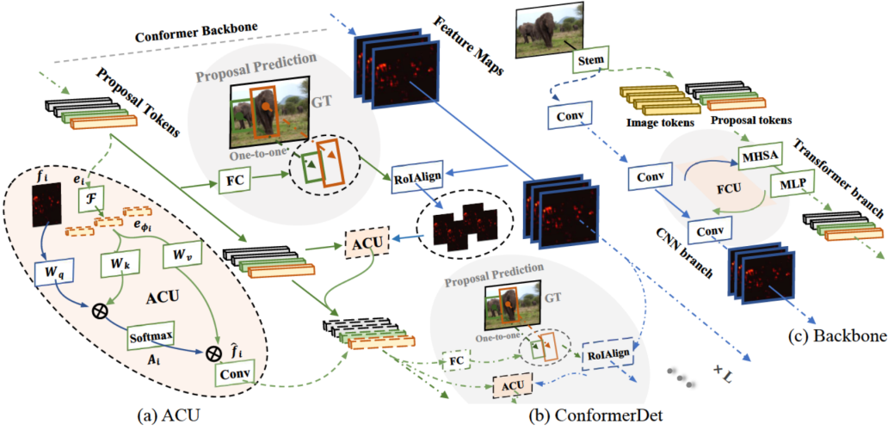
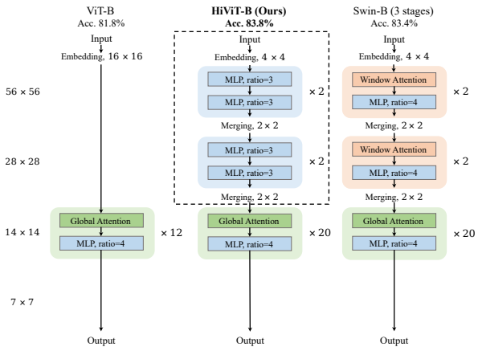
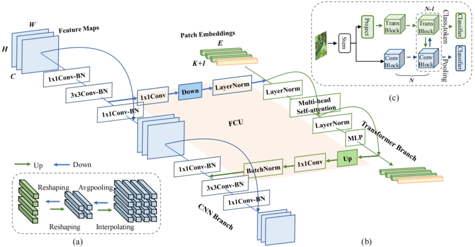
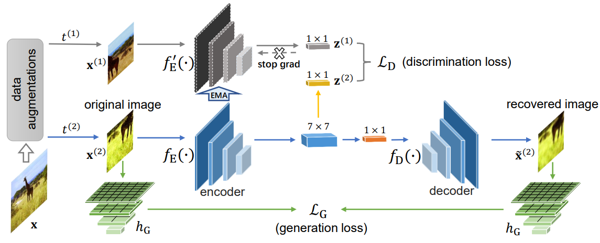
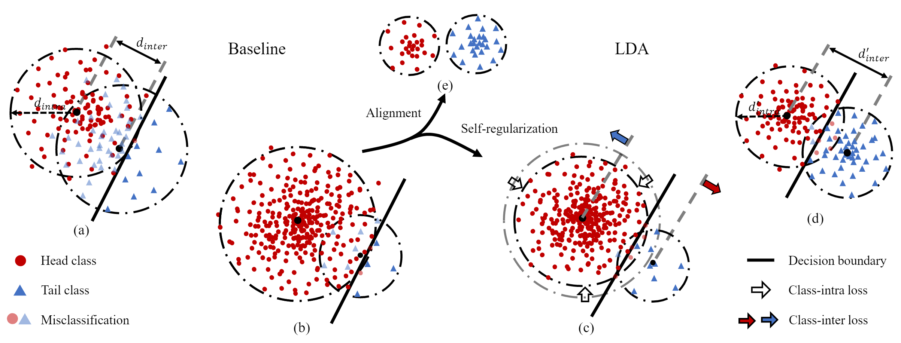

Wei HuangPh.D. candidateRoom 330, Academy 2 Building
|
|
Biography
I am a Ph.D. candidate of PRISDL in the School of Electronic, Electrical and Communication Engineering, University of Chinese Academy of Sciences , advised by Prof. Qixiang Ye. I got a B.E. degree in University of Electronic Science and Technology of China, Chengdu in June 2018.
My research interests include computer vision and deep learning, specifically for representation learning.
Publications
|  | Zhiliang Peng, Zonghao Guo, Wei Huang, Yaowei Wang, Lingxi Xie, Jianbin Jiao, Qixiang Ye
Conformer: Local features coupling global representations for visual recognition and detection IEEE Transactions on Pattern Analysis and Machine Intelligence, 2023 [Paper] [Code] 
|
|  | Xiaosong Zhang, Yunjie Tian, Lingxi Xie, Wei Huang, Qi Dai, Qixiang Ye, Qi Tian
HiViT: A Simpler and More Efficient Design of Hierarchical Vision Transformer International Conference on Learning Representations, 2023 [Paper] |
|  | Zhiliang Peng, Wei Huang, Shanzhi Gu, Lingxi Xie, Yaowei Wang, Jianbin Jiao, Qixiang Ye
Conformer: Local features coupling global representations for visual recognition Proceedings of the IEEE/CVF International Conference on Computer Vision, 2021 [Paper] [Code]
|
|  | Yunjie Tian, Lingxi Xie, Xiaopeng Zhang, Jiemin Fang, Haohang Xu, Wei Huang, Jianbin Jiao, Qi Tian, Qixiang Ye
Semantic-Aware Generation for Self-Supervised Visual Representation Learning [arXiv preprint] |
|  | Zhiliang Peng, Wei Huang, Zonghao Guo, Xiaosong Zhang, Jianbin Jiao, Qixiang Ye
Long-tailed Distribution Adaptation Proceedings of the 29th ACM International Conference on Multimedia, 2021 [Paper] [Code] |